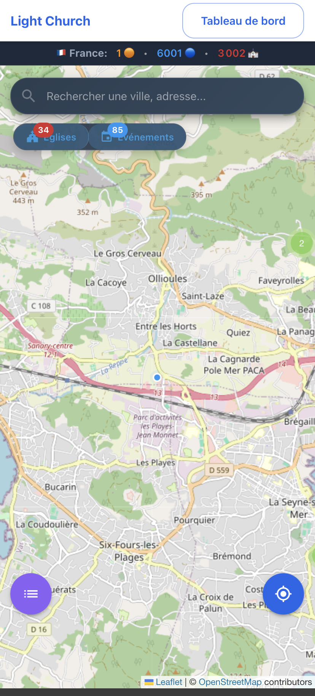
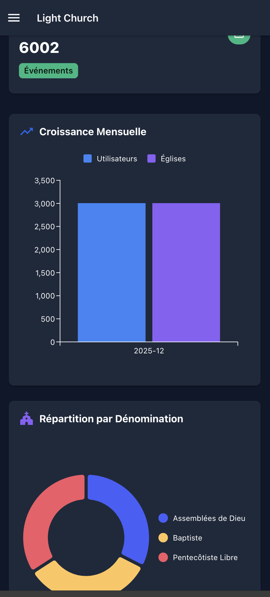
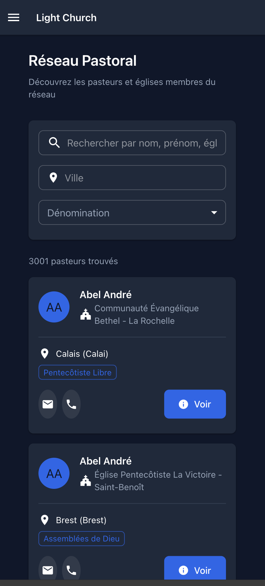
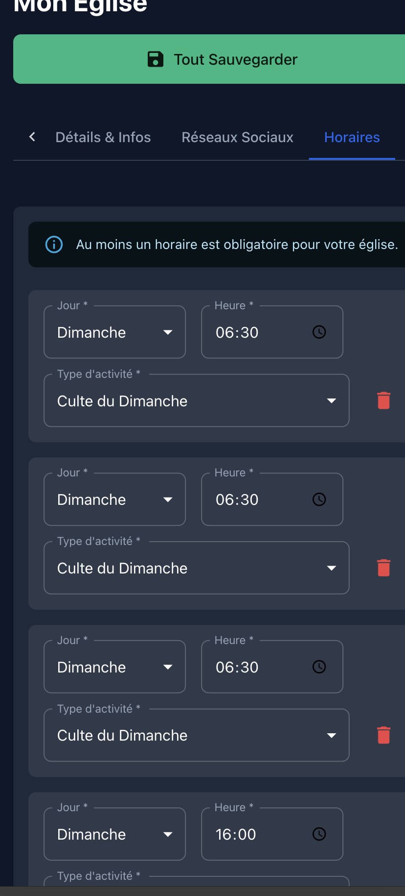
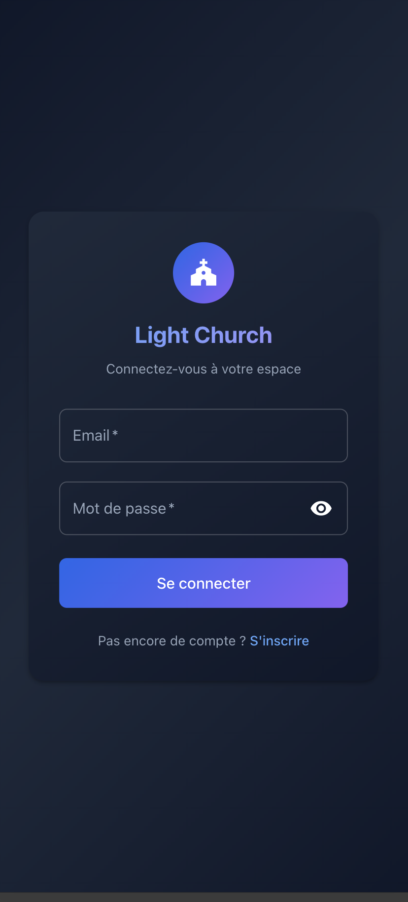
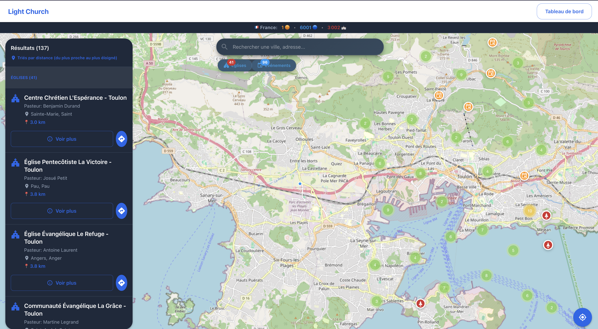
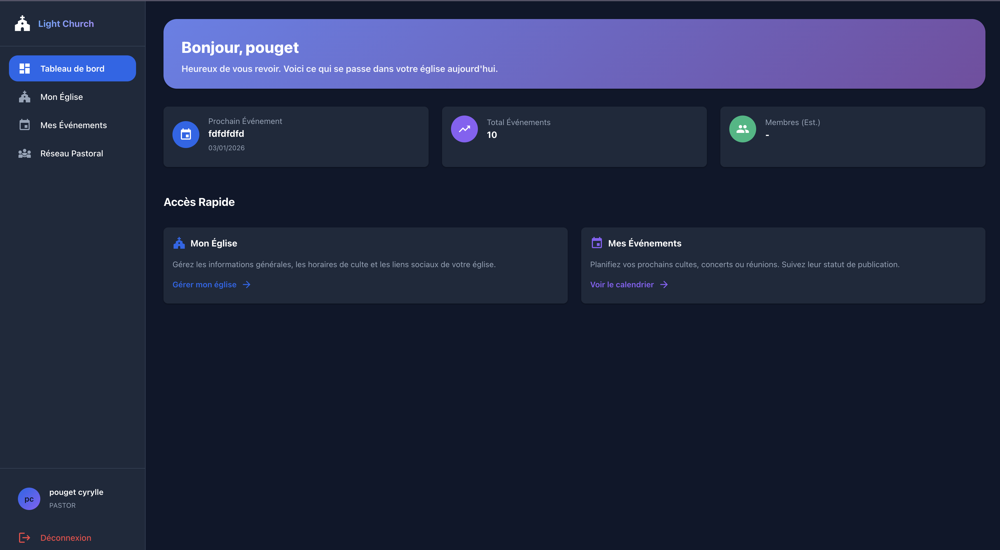
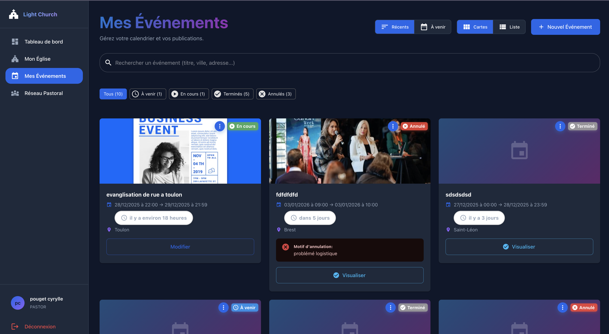
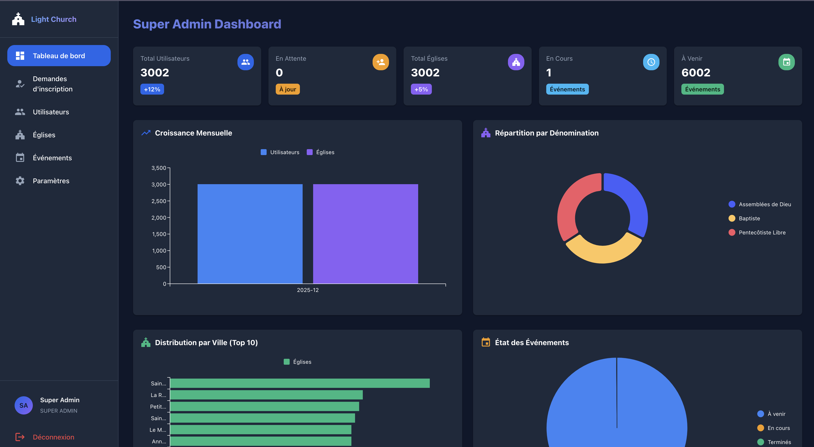

Des milliers de personnes cherchent une église près de chez eux chaque jour. Light Church affiche votre église et vos événements en temps réel sur une carte interactive accessible depuis le site web et l'application mobile. Mise à jour instantanée de toutes vos informations.
Visible partout (iOS, Android, Web)
Trouvez facilement toutes les églises à proximité
Vos réunions, évangélisations, conférences sur la map
Recherchez, communiquez, collaborez
✓ 100% Gratuit ✓ 3000+ Églises ✓ Visible immédiatement
La même plateforme, deux modes d'utilisation. Au bureau ? Utilisez le dashboard web. En déplacement ? L'application mobile prend le relais. Light Church s'adapte automatiquement à votre contexte pour une expérience optimale.
Application iOS & Android - Créez un événement, modifiez vos horaires depuis votre smartphone





Interface Web complète - Analytics avancés, statistiques détaillées, export de données depuis votre ordinateur




"Allez, faites de toutes les nations des disciples..." - Matthieu 28:19
Des milliers de personnes cherchent Dieu chaque jour sur leur téléphone. Mais comment peuvent-elles trouver votre église si vous n'êtes pas visible là où elles cherchent ?
Light Church permet aux personnes de voir en temps réel tous les événements et églises près de chez eux. En voyage ? L'application affiche automatiquement les églises et événements à proximité de leur localisation.
Votre église reçoit un évangéliste ? Créez l'événement et toutes les personnes ayant l'application recevront cette information instantanément. Vous modifiez vos horaires de culte ? La mise à jour est immédiate sur l'application mobile et le site web.
Light Church vous donne les outils modernes pour remplir votre mission : être une lumière dans votre ville et guider les âmes vers Christ, en temps réel.
Vous êtes la lumière du monde. Une ville située sur une montagne ne peut être cachée.
Matthieu 5:14des personnes utilisent leur smartphone pour trouver une église près de chez eux
de recherches "église près de moi" chaque année en France
Votre église peut être la réponse à ces recherches
Votre église fait un travail formidable, mais les gens ne peuvent pas vous trouver facilement sur internet
Entre la préparation des cultes, la pastorale et l'administratif, vous n'avez pas le temps de gérer un site web
Difficile de promouvoir vos événements et d'atteindre de nouvelles personnes au-delà de votre assemblée actuelle
Vous ne savez pas combien de personnes vous trouvent ou s'intéressent à votre église en ligne
Des outils puissants mais simples, conçus spécifiquement pour les responsables d'églises
Créez et gérez le profil de votre église en quelques minutes : informations, horaires, photos, adresse, dénomination, message du pasteur.
Publiez vos cultes spéciaux, conférences, concerts, séminaires. Les utilisateurs peuvent les ajouter à leur calendrier en 1 clic.
Mesurez votre impact : nombre de vues, nouveaux visiteurs, événements populaires, heures de pointe, origine géographique.
Votre église apparaît sur la carte pour tous les utilisateurs de Light Church dans votre région. Touchez des milliers de personnes.
Donnez accès à vos collaborateurs (anciens, responsables) avec différents niveaux de permissions. Travaillez en équipe.
Notre équipe vous accompagne à chaque étape. Formation gratuite, support technique réactif et ressources complètes.
Soyez trouvé par des personnes en recherche spirituelle active dans votre région. Chaque profil reçoit en moyenne 800+ vues par mois.
Les nouveaux visiteurs trouvent facilement toutes les infos : horaires, adresse, événements. Réduisez la barrière d'entrée.
Rejoignez un mouvement de milliers d'églises qui utilisent la technologie pour accélérer le réveil spirituel.
Les églises sont éparpillées sur différents sites, pages Facebook, annuaires obsolètes. Impossible pour quelqu'un de trouver TOUTES les églises d'une ville facilement.
Horaires erronés, adresses incorrectes, événements passés encore affichés. Les gens se déplacent pour rien.
Pas de plateforme permettant de gérer son église, publier des événements et mesurer son impact digital facilement.
Difficile de trouver et communiquer avec d'autres pasteurs de sa région pour des collaborations, invitations, partage d'expériences.
Nous croyons qu'un grand réveil spirituel arrive. Des milliers de personnes vont chercher Dieu, chercher une église, chercher la vérité.
La question est: Seront-ils capables de vous trouver ?
Light Church est l'infrastructure technologique qui va faciliter ce réveil:
Toute personne en recherche spirituelle trouve immédiatement les églises près de chez elle. Fini les barrières.
Vos campagnes, conférences, réunions spéciales touchent 10x plus de monde grâce à la visibilité sur l'app mobile et le web.
Les pasteurs se connectent, collaborent, s'invitent, organisent ensemble. Unité pour le réveil!
"L'Esprit et l'épouse disent: Viens! Et que celui qui entend dise: Viens!"
Apocalypse 22:17
Préparez votre église pour le réveil.
Soyez visible, accessible, prêt à accueillir la moisson qui vient.
Ce que vous allez faire concrètement
Un outil simple et puissant pour gérer votre église et toucher votre ville
En tant que Pasteur
Gérez votre église et touchez plus d'âmes
Créez votre compte
Inscription gratuite en 2 minutes. Nom, email, église. C'est tout!
Renseignez votre église
Informations complètes: nom, adresse, horaires de cultes, dénomination, photos, message du pasteur, services proposés.
Votre église s'affiche sur la carte
Automatiquement visible sur la carte interactive pour des milliers de personnes. Toutes vos infos sont à jour en temps réel!
Créez vos événements
Réunions, évangélisation, pasteur invité, conférences, concerts... Vos événements apparaissent sur l'app mobile ET le site web!
Connectez avec d'autres pasteurs
Voir la liste des pasteurs, rechercher un pasteur, communiquer avec lui. Réseau spirituel actif!
Suivez votre impact
Statistiques en temps réel: combien de personnes voient votre église, vos événements populaires, tendances.
Pour les Fidèles
Comment ils vont trouver votre église
Ils vont sur le site ou l'app mobile
Site web accessible à tous OU application mobile téléchargeable (iOS/Android).
Voient les églises à proximité
Carte interactive montrant TOUTES les églises autour d'eux avec géolocalisation précise.
Découvrent les événements près de chez eux
Tous vos événements apparaissent sur la carte et dans la liste. Filtrage par type, date, distance.
Consultent les infos de votre église
Horaires, adresse exacte, dénomination, photos, message du pasteur. Tout est clair!
Obtiennent l'itinéraire GPS
Navigation directe vers votre église. En 1 clic, ils savent comment venir!
Ajoutent vos événements à leur calendrier
Rappels automatiques. Ils n'oublient plus vos événements!